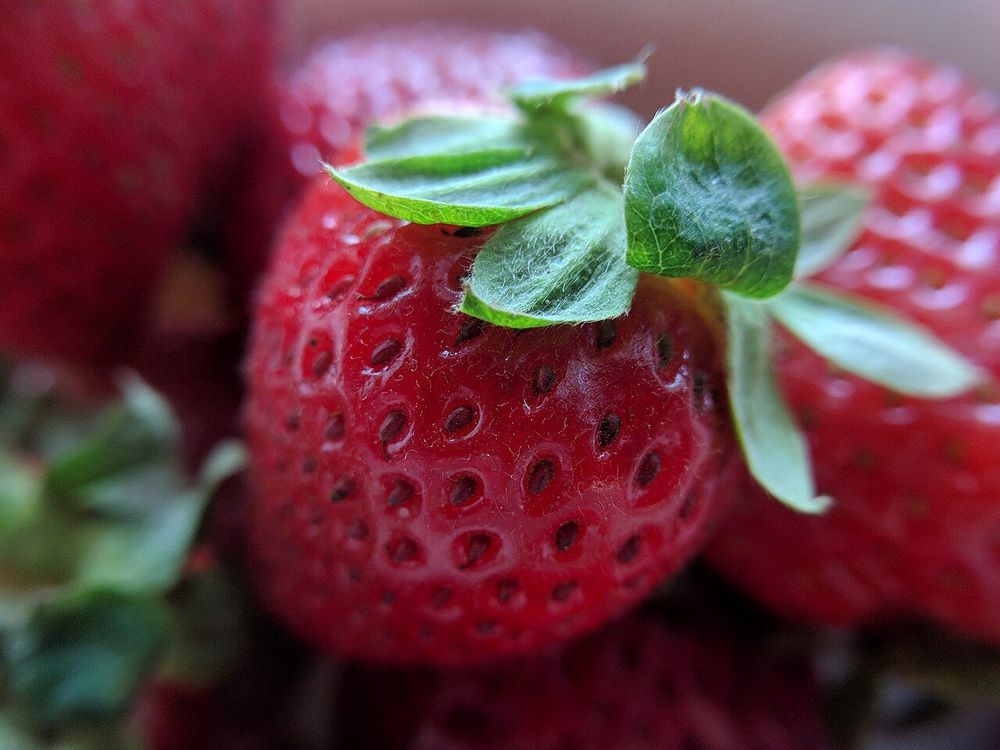
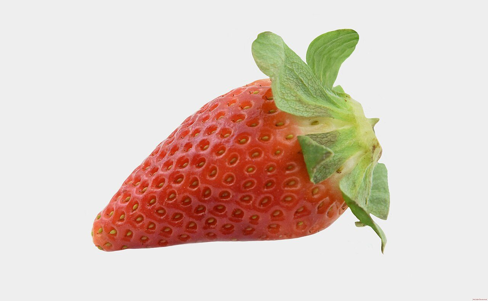
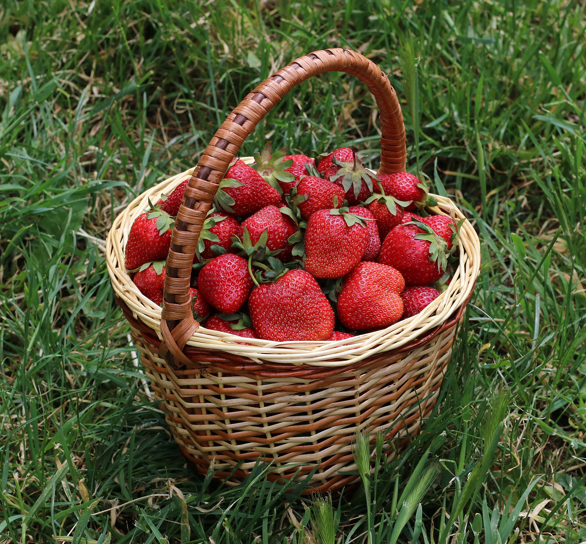

Japan grows dozens of strawberry varieties, most developed by regional breeding programs and prized for a balance of sweetness, gentle acidity and aroma. The best known include Amaou, Tochiotome, Beni Hoppe and Skyberry, alongside rare white strawberries.
If you have only ever eaten one kind of strawberry, Japan's world of ichigo can be a revelation. Rather than a single generic berry, Japan has developed a wide range of named cultivars — each with its own flavour profile, size, shape and appearance. Many are bred by prefectural research stations and become closely associated with the region that grows them.
This guide walks through the most celebrated Japanese strawberry varieties and what makes each one distinct, so you know what to look for the next time you taste them.
What makes Japanese strawberry varieties different
Across the world, strawberries are often bred for shelf life and shipping durability. Japanese breeding programs tend to prioritise something else first: eating quality. That usually means a fuller sweetness, a fragrant aroma, tender flesh and a pleasing balance between sugar and acidity.
Because different prefectures specialise in different cultivars, a variety's name often tells you where it comes from and hints at its character. Here are the ones worth knowing.

The best-known Japanese strawberry varieties
Amaou
Perhaps the most famous premium strawberry in Japan, Amaou is grown in Fukuoka Prefecture on the southern island of Kyushu. Its name is drawn from the Japanese words for red, round, large and delicious. True to that, Amaou berries are typically large, deeply coloured, rounded and juicy, with a rich, full sweetness balanced by just enough acidity. It is a berry people reach for when they want something indulgent.

Tochiotome
Tochiotome hails from Tochigi Prefecture and has long been one of the most widely grown strawberries in eastern Japan. It is generally bright red, firm and glossy, with a well-rounded sweet-tart flavour and good keeping quality. Compared with the larger Amaou, Tochiotome is often a more modest size — an everyday favourite that still eats beautifully.
Beni Hoppe (Benihoppe)
Associated with Shizuoka Prefecture, Beni Hoppe translates roughly to "red cheeks." The berries are glossy and vivid, aromatic, and known for an appealing balance of sweetness and brightness. It is a variety prized for both its looks and its fragrance.
Skyberry
Also from Tochigi, Skyberry is a premium cultivar known for its notably large, elongated conical shape and glossy surface. It leans sweet with a clean, well-balanced flavour, and its striking size and appearance make it a popular choice for gifts and special occasions.
White strawberries (shiro ichigo)
Among the rarest and most distinctive are Japan's white strawberries, or shiro ichigo — cultivars with pale cream to nearly white flesh and soft, reddish seeds. They tend to be gently sweet with a delicate, sometimes pineapple-like aroma. Because they are difficult to grow and produced in small quantities, white strawberries are treated as a true luxury.
Beyond these, Japan is home to many more regional cultivars, and breeders continue to release new ones. Part of the pleasure is discovering which you like best — something we explore in why Japanese strawberries are so premium.

How to choose a variety
- For rich, indulgent sweetness: look to larger cultivars like Amaou or Skyberry.
- For a bright, balanced everyday berry: Tochiotome and Beni Hoppe are hard to beat.
- For something special or unusual: seek out rare white strawberries when you can find them.
- Whatever you choose: freshness and timing matter as much as the variety — see when Japanese strawberries are in season.
Frequently asked questions
What is the most famous Japanese strawberry variety?
Amaou, grown in Fukuoka, is among the best known. Its name comes from the Japanese words for red, round, large and delicious, and it is prized for its size, deep colour and rich, juicy sweetness. Tochiotome, from Tochigi, is one of the most widely grown varieties across eastern Japan.
What are white strawberries?
White strawberries, or shiro ichigo, are pale cream to white-fleshed cultivars with soft red seeds. They are gently sweet with a delicate, sometimes pineapple-like aroma, and are rare and highly prized in Japan.
Are Japanese strawberries sweeter than regular strawberries?
Japanese strawberries are bred and grown for a balance of sweetness and gentle acidity, along with tenderness and aroma. Many people find them notably sweet and fragrant — a result of careful breeding, cool-season greenhouse growing and picking at peak ripeness.
Which Japanese strawberry variety is best?
There is no single best variety — it depends on your taste. Amaou and Skyberry are large and richly sweet, Tochiotome and Beni Hoppe offer a bright sweet-tart balance, and white strawberries are delicate and aromatic. Trying a few is the best way to find your favourite.
Taste the difference for yourself
Reserve a box of premium Japanese strawberries, delivered fresh.
Shop & Reserve →